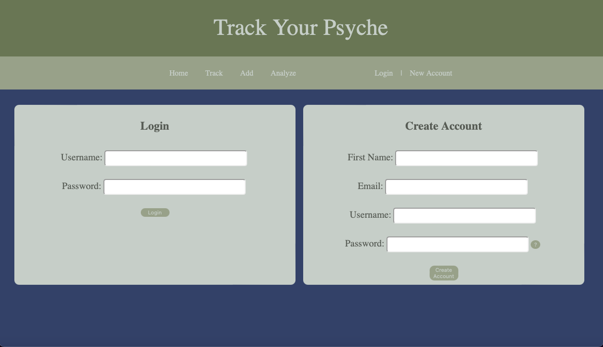

Hello and welcome to Track My Psyche help center. Track My Psyche is currently based on local servers, so there is user set up required in order to utilize it. Follow the instructions below to set it up or help troubleshoot any issues. For any issues not listed, please submit a help request
Download Xampp. Choose the download that fits your operating system
Start servers by clicking "Manage Servers" then "Start All" or just start the MySQL Database server.
Click "Welcome" on Xampp, then "Open Application Folder." Drag the folder fp2 to the folder htdocs.
To create the database, either click the button below or follow the instructions.
Navigate to localhost/phpmyadmin on your browser
Navigate to SQL in the menu bar on top of the page and input the following code:
CREATE DATABASE Track_My_Psyche;
CREATE TABLE User_Profile (
userID INT(5) NOT NULL AUTO_INCREMENT,
fname varchar(20) NOT NULL,
username varchar(30) NOT NULL,
email varchar(30) NOT NULL,
password varchar(20) NOT NULL,
PRIMARY KEY (userID)
);
USE Track_My_Psyche;
CREATE TABLE Conditions (
ConditionID INT(10) NOT NULL AUTO_INCREMENT,
ConditionName varchar(30) NOT NULL,
PRIMARY KEY (ConditionID)
);
CREATE TABLE User_Conditions (
UCID int(10) NOT NULL AUTO_INCREMENT,
userID int(10) NOT NULL,
ConditionID int(10) NOT NULL,
PRIMARY KEY (UCID),
CONSTRAINT FK_USER FOREIGN KEY (userID)
REFERENCES User_Profile(userID),
CONSTRAINT FK_COND FOREIGN KEY (ConditionID)
REFERENCES Conditions(ConditionID)
);
CREATE TABLE User_Condition_Rating (
UCRID int(10) NOT NULL AUTO_INCREMENT,
userID int(10) NOT NULL,
condID int(10) NOT NULL,
rating int(10) NOT NULL,
theDate date NOT NULL,
PRIMARY KEY (UCRID),
CONSTRAINT FK_USERID FOREIGN KEY (userID)
REFERENCES User_Profile(userID),
CONSTRAINT FK_CONDITION FOREIGN KEY (condID)
REFERENCES Conditions(ConditionID)
);
INSERT INTO Conditions (ConditionName)
VALUES ('Happy'), ('Angry'), ('Sad'), ('Anxious'), ('Sleep');
Navigate to Track Your Psyche and select New Account. Enter your details to create your account. Password must be at least 8 characters, include at least one uppercase and one lowercase letter as well as at least one number. Once your account has successfully been created, login.
Track Your Psyche can be used to track your moods, pain, or anything else you would like to track that can be rated on a scale from 0 to 5. It will also provide a graph so you can monitor the changes in your mood. To learn more about each function keep reading.
Here you can track your moods or your custom categories. To input data, either type in the date (in format YYYY/MM/DD) or check the box for today’s date, then rate your moods and click submit.
Add your own custom category to track. Type the name of the category you would like to track and click submit. Your category will now be added and will show up one the track form.
On this page you can view a line graph of all the data you have added.